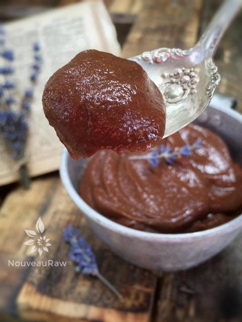
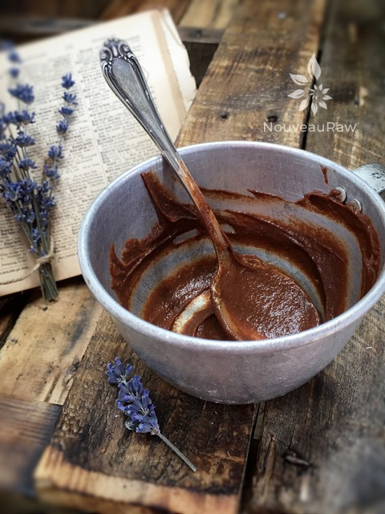

Banana Chocolate Chia Pudding

~ raw, vegan, gluten-free, nut-free ~
This is a really simple recipe to throw together. If you just need a quick “pick-me-up” between meals or a quick, easy and nutritious dessert, this recipe will satisfy you!
Miracle Seeds
Chia seeds are little miracle seeds. How they can pack so much nutrition in such a little package is beyond me, but then there is that saying that good things come in small packages. Chia seeds contain some 20% protein, 30% oil and 25% dietary fibers which can be eaten as raw or in prepared dishes. Raw chia seeds are full of dietary fibers that increase the water content in the intestines, which eventually eases defecation.
Chia seeds contain both soluble and insoluble fibers. The seeds are coated with soluble fibers while the exterior of the seeds contains the insoluble fibers.
Soluble fibers are required for gelling action to keep the colon hydrated, and the insoluble fibers are required for the bulk movement of undigested materials through the colon. This is just one of the many health benefits that chia seeds have to offer. So not only will this recipe satisfy your taste buds, but it will also satisfy your colon! :)
Ingredients:
serving: 1
- 1/2 cup chia gel
- 1 ripe banana, frozen (or fresh)
- 1 Tbsp raw cacao powder
- 1/2 tsp ground Ceylon cinnamon
- 1 tsp vanilla
Preparation:
- Place all of your ingredients in the blender and blend until nice and creamy.
- Dish and serve. You can store this in an airtight container in the fridge for several days if desired.
- Option: after you place your pudding in a bowl you can top it with nuts, raisins, etc.


© AmieSue.com